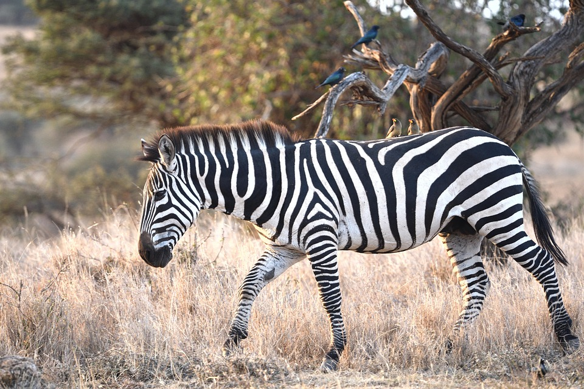

01
Child-Specific Data
실제 아동 언어 데이터
5~13세 비원어민 아동의 발화·쓰기·오류·반응 데이터
E-CLOUD AI
아이들이 말하고 배우는 방식을 이해하는 AI 디지털휴먼
AI Digital Humans That Understand How Children Speak and Learn
Overview.
General-purpose AI understands language. ELEA understands how children learn language.
What Makes ELEA Different.
실제 아동 언어 데이터
5~13세 비원어민 아동의 발화·쓰기·오류·반응 데이터
아동의 학습 흐름을 이해하는 자체 언어모델
언어 데이터와 학습 맥락을 기반으로 상호작용과 평가를 설계
듣고, 말하고, 반응하는 인터페이스
ELM을 2D·3D 디지털휴먼으로 구현해 실제 학습 경험으로 연결
MEET ELEA
아동 언어 데이터와 ELM, AI 디지털휴먼이 교재 기반 상호작용부터 평가와 피드백까지 연결하는 ELEA의 학습 경험을 영상으로 만나보세요.
Watch Video ▶
Data Moat.
누적 아동 학습 데이터
월간 신규 유입 데이터
비원어민 아동 학습 데이터
FROM LANGUAGE AI TO DIGITAL HUMAN
아동의 발화, 문장 구성, 오류와 반응 패턴을 기반으로
학습 상황에 적합한 상호작용을 제공합니다.
ELM을 표정·음성·립싱크·제스처를 갖춘 2D·3D 디지털휴먼 인터페이스로 구현합니다.
AI-POWERED LEARNING EXPERIENCE
교재와 학습 목표를 이해한 ELEA가 1:1 대화와 발화 훈련을 제공하고,말하기·쓰기 평가와 학습 리포트로 연결합니다.
교재·레벨·학습 목표
1:1 대화와 발화 훈련
말하기·쓰기 분석

피드백·대시보드·학부모 리포트
PROVEN IN REAL CLASSROOMS
ELEA는 실제 학습자와 교실에서 반복적으로 운영되며
제품 완성도와 학습 경험을 지속적으로 고도화하고 있습니다.
교재 기반 수업, 반복적인 학습자 상호작용,말하기·쓰기 평가와 리포팅을 실제 교육 현장에서 운영합니다.
3000명 이상의 누적 학습자로부터 누적된 380만 건 이상의 데이터
반복 발화 훈련과 데이터 기반 피드백을 통해학습자의 말하기 참여, 유창성, 쓰기 정확도와 학습 자신감 향상을 지원합니다.
국내외 교육·에듀테크 분야의 수상과 인증을 통해ELEA의 기술력과 사업성을 검증 받았습니다.
유·초등 영어교육에서 검증한 데이터와 기술을 기반으로 글로벌 영어교육, 한국어교육, 이중언어 교육으로 적용 영역을 확장합니다.

ELEA에서 검증한 ELM과 AI 디지털휴먼 기술을 기반으로 실버 커뮤니케이션, Data/API와 다양한 디지털휴먼 응용 영역으로 확장합니다.